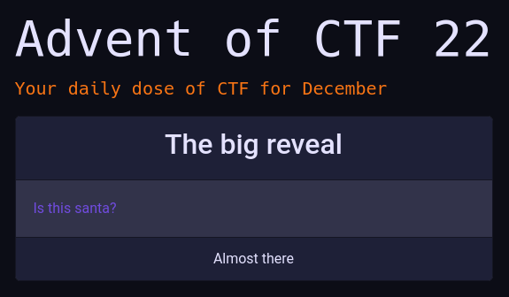
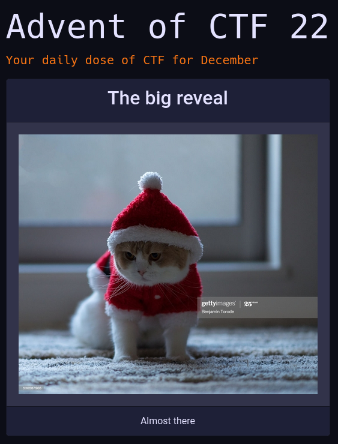
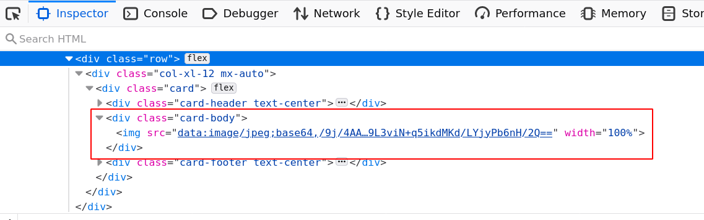

Advent of CTF - Challenge 22
“Dubstep”
Challenge
This relatively simple challenge will teach you about Server Side Request Forgery. It is one of those type of vulnerabilities where cloud environments struggle with; allowing access through a server to an internal resource.
Solution
The challenge starts with a single link.

The link leads to a picture of an adorable cat.

The page is loaded by means of an image parameter to the index.php page. This is always a good sign of Local File Inclusion, as we have seen earlier.
https://22.adventofctf.com/index.php?image=cat.jpg
Investigating the source of the page you will notice that the image is not an image url, but a data-uri (docs), that is a special type of URL which contains the full image as part of the string, in Base64.

As a file is included when passing it to image, lets see if we can grab the flag.php this way. Indeed it returns a Base64 String!
https://22.adventofctf.com/index.php?image=flag.php
Sadly no flag, yet. The file uses another file to load some functions and variables; secret.php. This file is protected against direct read in index.php however. So there is no way to get to the get_flag function.
<?php
include("secret.php");
if (strpos(check_secret(), "allow") !== false) {
echo get_flag();
}
?>
Looking at the index.php it is clear how the mechanism works. Given a filename in image it will simply load it using file_get_contents as long as it does not contain secret. The docs for file_get_contents say that path can be any string, from a file path, a php wrapper (such as the base64 encode we have used before) to an URL.
$path = $_GET["image"];
if (strpos($path,"secret") !== false) {
$path="cat.jpg";
}
$image = file_get_contents($path);
echo '<img src="data:image/jpeg;base64,'.base64_encode($image).'" width="100%"/>';
The documentation for file_get_contents says it will load a url as well. Trying various URLs will get you resolving errors, until you try http://localhost. This will actually get you the first page again.
Lets try to get the flag by calling http://localhost/flag.php instead. This is a classic SSRF technique; the server allows the access of the file through the local IP, but not the external IP. This will retrieve the flag.
This type of vulnerability is common in cloud environments where an internal configuration service is accessible from application containers. For instance on the GCP.
https://22.adventofctf.com/index.php?image=http://localhost/flag.php
Besides the points, also be sure to grab the beautiful badge!
Go back to the homepage.